IMO Participation Certificate-2013
I have received a Participation Certificate from the prestigious International Mathematical Olympiad (IMO) in the year 2013.This recognition signifies my dedication, perseverance, and passion for mathematics.
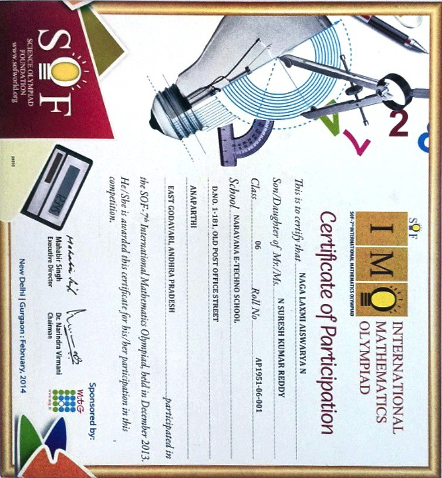SIMO Merit Certificate-2013
I was awarded the prestigious SIMO (Superior International Mathematics Olympiad) Merit Certificate for excellence in the year 2013.
I dedicated countless hours to honing my problem-solving abilities and diving deep into the fascinating world of mathematics.
1st Position in CDF Quiz-2013
I secured the 1st prize in the prestigious CDF (Concepts, Definitions & Formulae) Quiz in 2013.The CDF Quiz organized by Narayana Schools provided an exciting platform for students to showcase their knowledge and understanding of fundamental concepts, definitions, and formulas in various subjects.
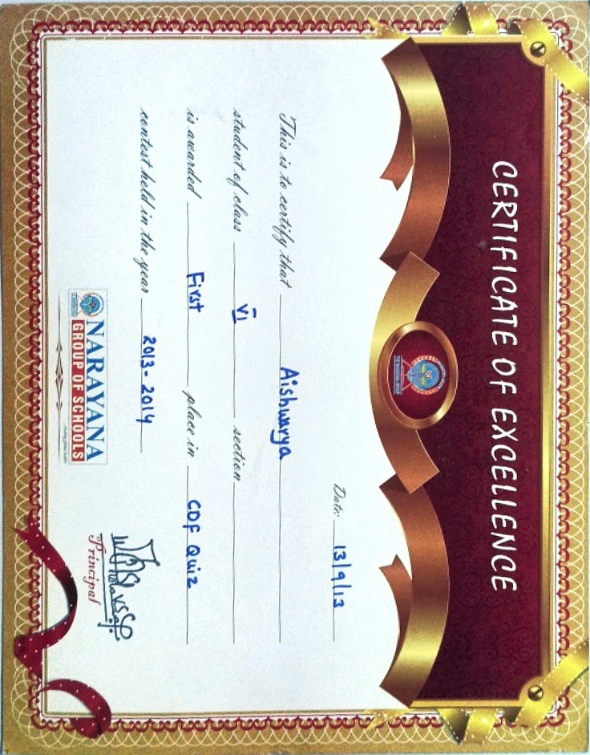Secured 3rd Rank in 8th class
I have been awarded a Certificate of Excellence for securing the 3rd rank in the Term 1 exams in 2014! Receiving this certificate holds great significance for me as it represents the hard work, dedication, and commitment I put into my studies. It is a testament to the countless hours of preparation, focus, and determination that went into achieving this academic milestone.
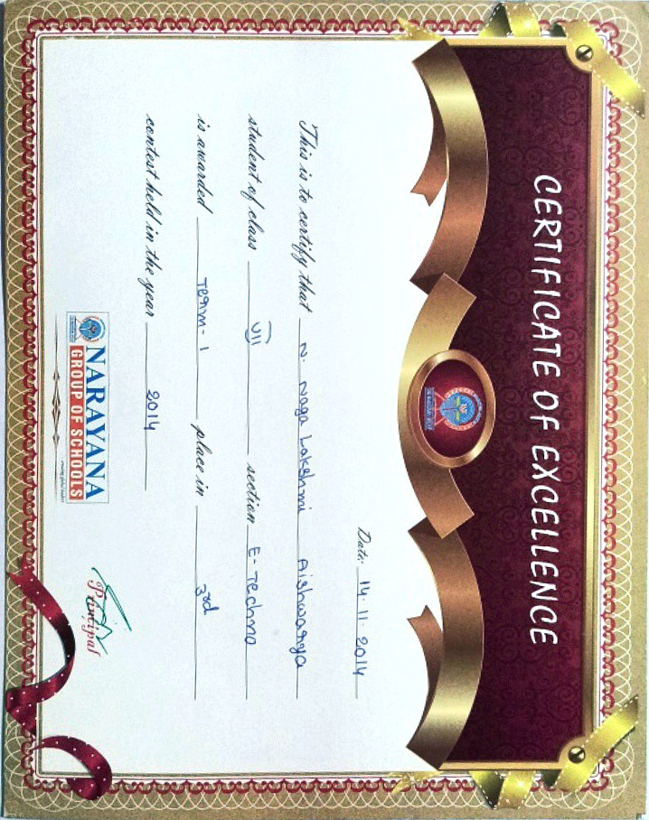Certificate of Merit-IMO-2014
I have been awarded a Certificate of Merit for my outstanding performance in the International Mathematics Olympiad (IMO) Exam in 2014, securing an impressive international rank of 6591! Additionally, I am honored to have achieved a remarkable rank of 742 in the state of Andhra Pradesh! The IMO Exam is a prestigious competition that tests mathematical knowledge, problem-solving skills, and critical thinking abilities on an international scale.
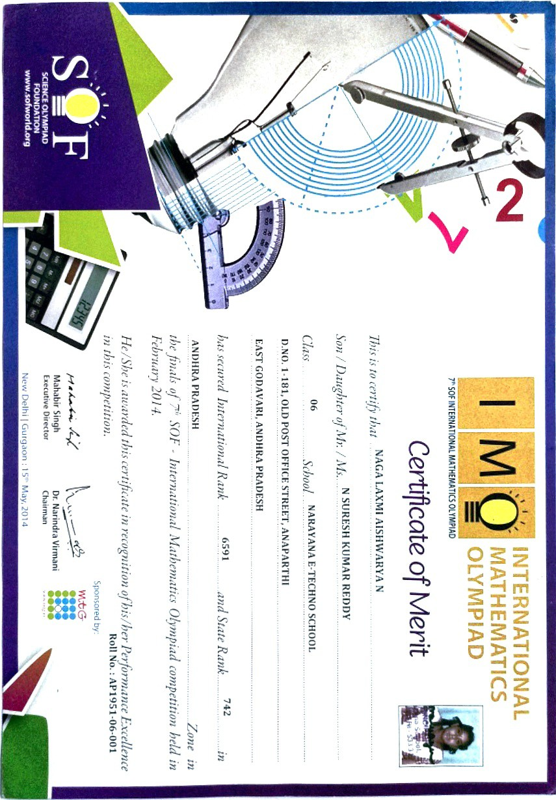Certificate of Participation-IMO-2014
I have received a Participation Certificate from the prestigious International Mathematical Olympiad (IMO) in the year 2014.This recognition signifies my dedication, perseverance, and passion for mathematics.
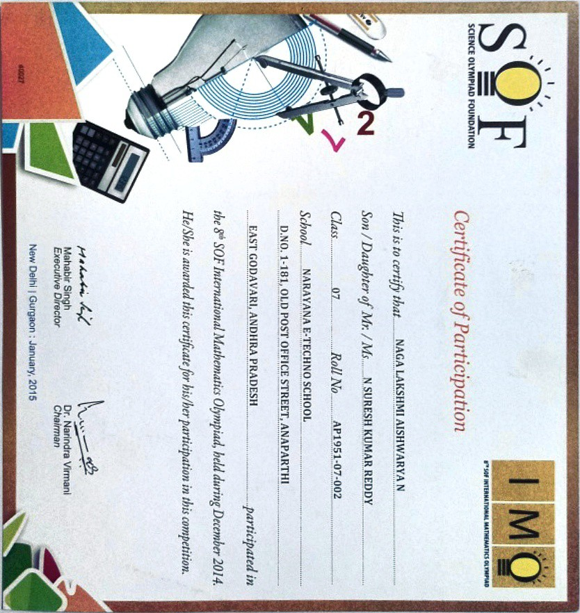Certificate of Merit-SISO-2014
I have been awarded a Certificate of Merit for my exceptional performance in the Science Olympiad (SISO) Exam in 2014, securing an impressive All India Rank of 292! The SISO Exam is a prestigious competition that tests students' scientific knowledge, critical thinking, and problem-solving skills. Participating in this exam was an exciting opportunity to showcase my passion for science and challenge myself in the realm of scientific inquiry.
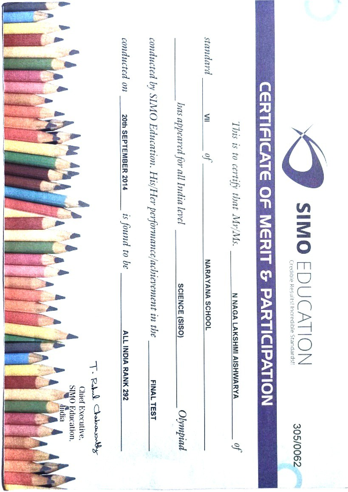Certificate of Participation-NSO-2015
I have received a Certificate of Participation for my participation in the National Science Olympiad (NSO) Exam in 2015! The NSO Exam is a prestigious competition that tests students' scientific knowledge, critical thinking, and problem-solving abilities. Participating in this exam was a remarkable opportunity to engage with various scientific concepts and expand my understanding of the world around us.
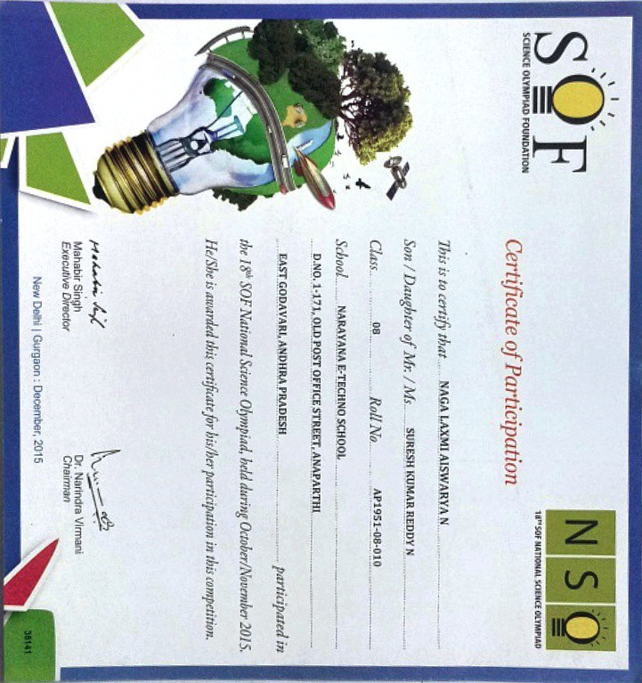Performance in UCO-2015
I have received a Certificate of Performance for my performance in the UCO (Unified Cyber Olympiad) Exam in 2015, securing an All India Rank of 3591! The UCO Exam is a prestigious competition that tests students' knowledge and understanding of cyber-related concepts, challenges, and innovations. Participating in this exam was a thrilling opportunity to showcase my skills and passion for the ever-evolving field of cybersecurity.
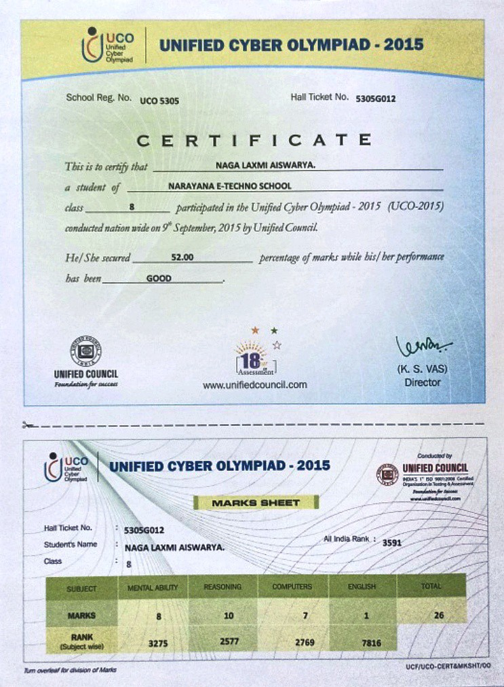ThrowBall-2016
Our team has been awarded the Certificate of Excellence as winners of the Throwball game in the Sports Meet held in 2016! Participating in the Sports Meet was an exhilarating experience, where athletes from various disciplines came together to showcase their talent, teamwork, and sportsmanship. Being recognized as the champions of the Throwball game is a testament to our dedication, skills, and unwavering spirit.
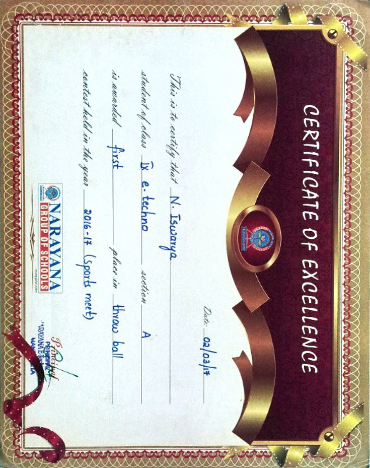Certificate of Merit-2nd Rank-2020
I have been awarded a Certificate of Merit for securing the 2nd rank in the 1st year 1st semester of my B.Tech program! This certificate holds great significance for me as it acknowledges the dedication, hard work, and academic excellence that I have demonstrated in my studies. It serves as a testament to the countless hours of learning, problem-solving, and dedication that I have invested in my education.
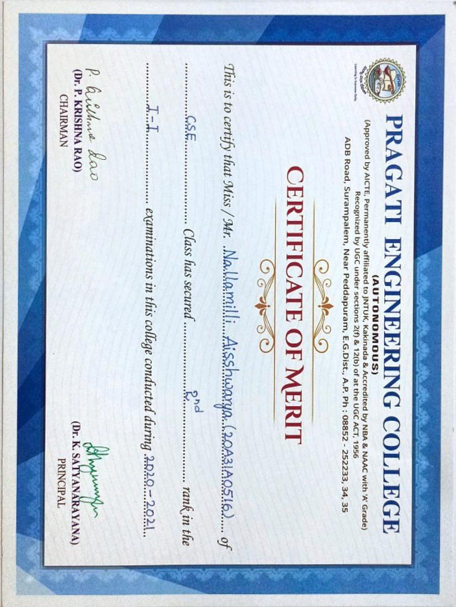Member in Rotaract Club-2021
I have been awarded a Certificate of Membership in the Rotaract Club in 2021! Joining the Rotaract Club has been an incredible journey of personal growth, community engagement, and impactful service. This certificate represents my commitment to making a positive difference in the world and my active participation in this dynamic organization.
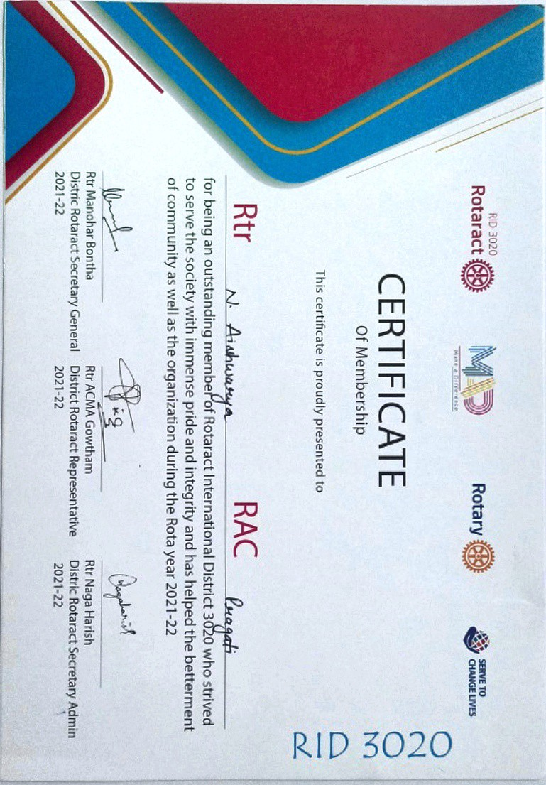C Programming Quiz-2021
I received Certificate of Participation in the "C Programming Quiz" conducted by the Computer Science and Engineering Department at Santhiram Engineering College, Nandyal. This esteemed certificate recognizes my successful completion of the quiz, held on August 18, 2021. Passing this quiz holds significant meaning to me as it demonstrates my proficiency and understanding of the fundamental concepts of C programming. It reflects the hard work and dedication I invested in honing my skills in this programming language.

Certificate of Participation-EPROZYNE STRIDES-BUG & DEBUG 2021
I have participated in EPROZYNE STRIDES 2021, organized by the Departments of CSE & IT at Pragati Engineering College (Autonomous). I received a Certificate of Participation for my involvement in the engaging event, "BUG AND DEBUG." This recognition showcases my enthusiasm and commitment to learning and innovation.Participating in the BUG AND DEBUG event was a fantastic experience that allowed me to put my problem-solving skills to the test. Collaborating with like-minded individuals and brainstorming innovative solutions further fueled my passion for computer science and technology.
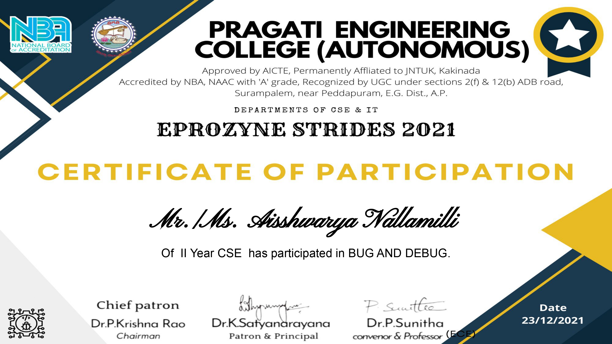Certificate of Participation-NEO-2021
I have been awarded a Certificate of Participation for my participation in the 4th National Engineering Olympiad (NEO) held in May 2021.Participating in this Olympiad was a valuable experience that allowed me to test my engineering knowledge, problem-solving abilities, and critical thinking skills.

Certificate of Completion-JES College-Quiz-2022
I received Certificate of Completion for successfully completing the World Students Day Quiz with a passing score of 93% . Completing the World Students Day Quiz was a fulfilling experience, as it allowed me to broaden my knowledge and stay informed about global events and advancements in various fields. It has further ignited my passion for continuous learning and personal growth.

Certificate of participation-Poster Presentation-2022
I received a Certificate of Participation for my poster presentation on the topic of Cybersecurity at a prestigious event in 2022! It serves as a reminder of the dedication and effort I put into preparing my presentation, conducting extensive research, and effectively communicating my ideas to the audience.
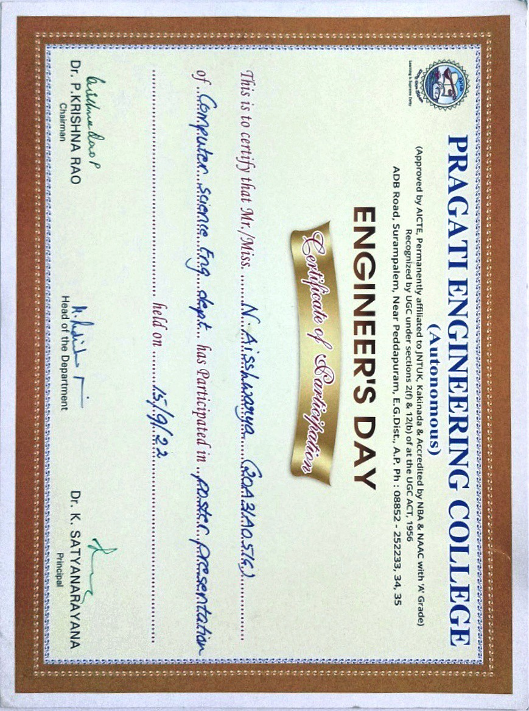Certificate of participation-Paper Presentation-2022
I have received a Certificate of Participation for my paper presentation on the topic of cyber security in 2022! Presenting my research on cyber security was an incredible opportunity to delve into the complexities of this rapidly evolving field.
It was an enriching experience that expanded my knowledge, refined my communication skills, and reinforced my passion for mitigating cyber risks.
Certificate of Participation-Virtusa-2023
I have been awarded a Certificate of Participation for my enthusiastic involvement in Virtusa's global initiative, the "Engineering Equity Hackathon".Receiving this Certificate of Participation serves as a testament to the dedication and effort I put into this meaningful endeavor. It reinforces my commitment to making a difference in the engineering field by promoting equity and inclusivity.
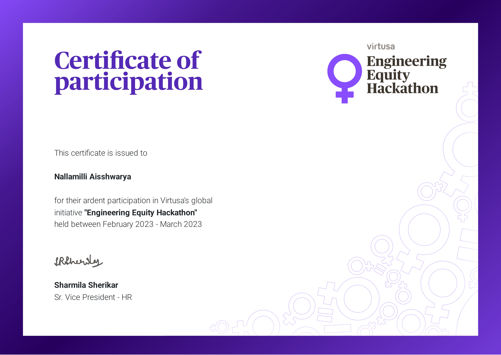Certificate of Appreciation-Womens Day-2023
I have received a Certificate of Appreciation from the Women Grievance Cell of Pragati Engineering College(A), Surampalem, on the occasion of "International Women's Day" 2023.Participating in this quiz not only allowed me to test my knowledge but also empowered me with valuable insights into women's issues, contributions, and achievements. It was a reminder of the strength, resilience, and remarkable achievements of women throughout history.

Certificate Of Participation-CODE GEEKS-2023
I have been awarded a Certificate of Participation from JNTU-GV College of Engineering(A), Vizianagaram, for my active participation in the CODE GEEKS contest.Participating in the CODE GEEKS contest was a thrilling experience that allowed me to challenge myself, think creatively, and solve complex problems. It was an opportunity to test my coding skills and learn from fellow participants, fostering a sense of camaraderie and healthy competition.
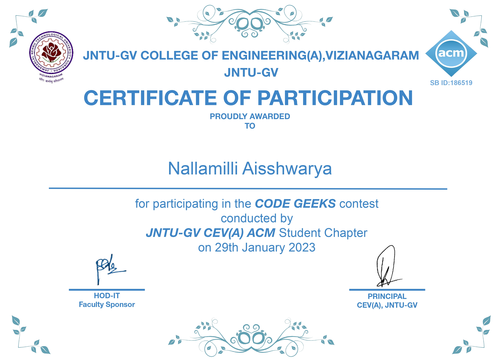Certificate of Appreciation-Industry 4.0-2023
I received Certificate of Appreciation from the Industry 4.0 Club at Pragati Engineering College (Autonomous) for my active participation and commendable performance in the "Online Quiz on Introduction to Cyber Security Essentials Part-II.Participating in the quiz allowed me to broaden my understanding of cyber security essentials, equipping me with the knowledge and skills necessary to navigate the digital landscape safely. It has motivated me to further explore this field and contribute to creating a secure online environment.